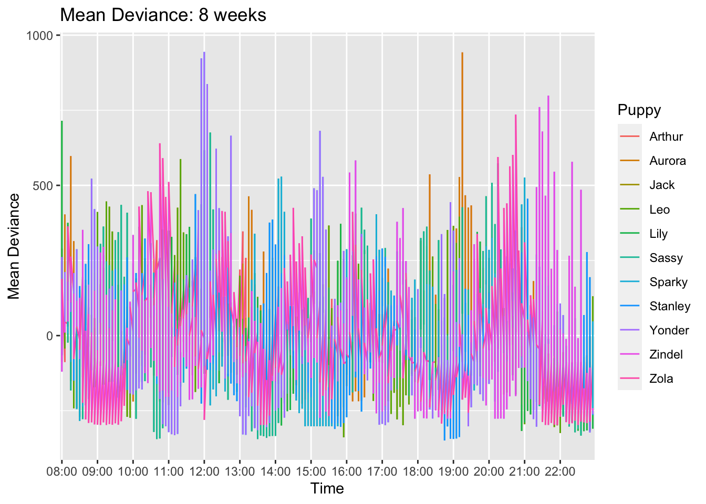
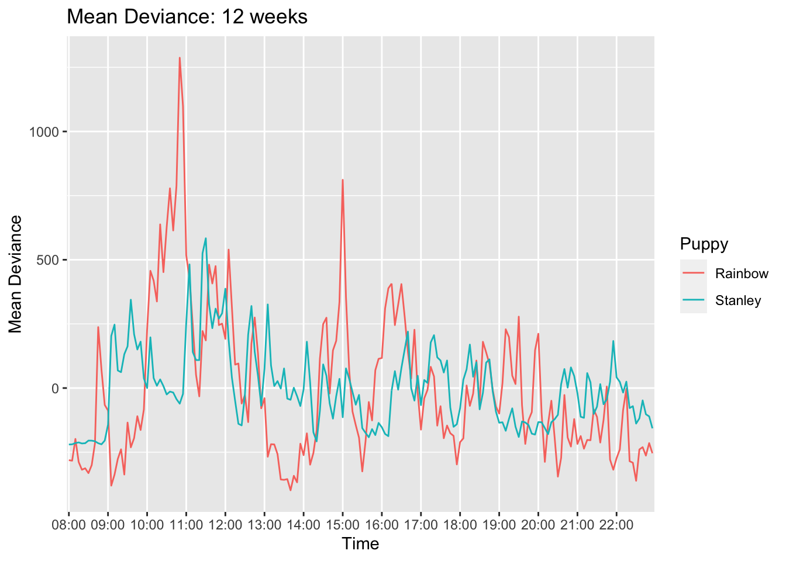
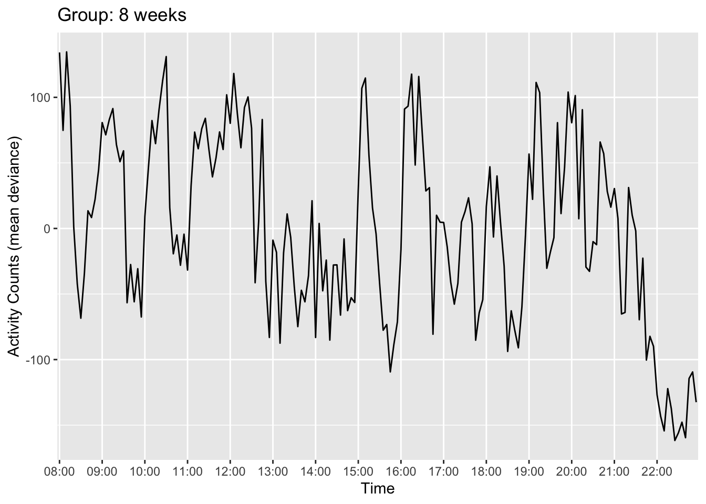
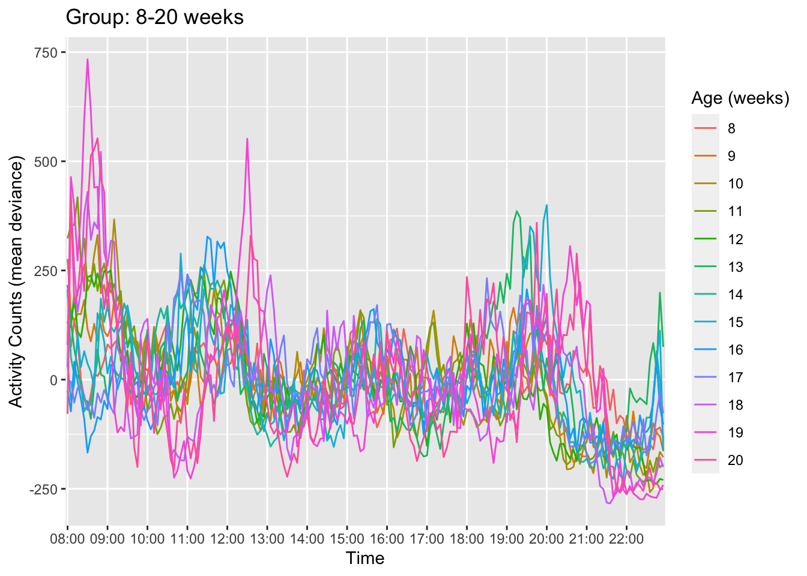
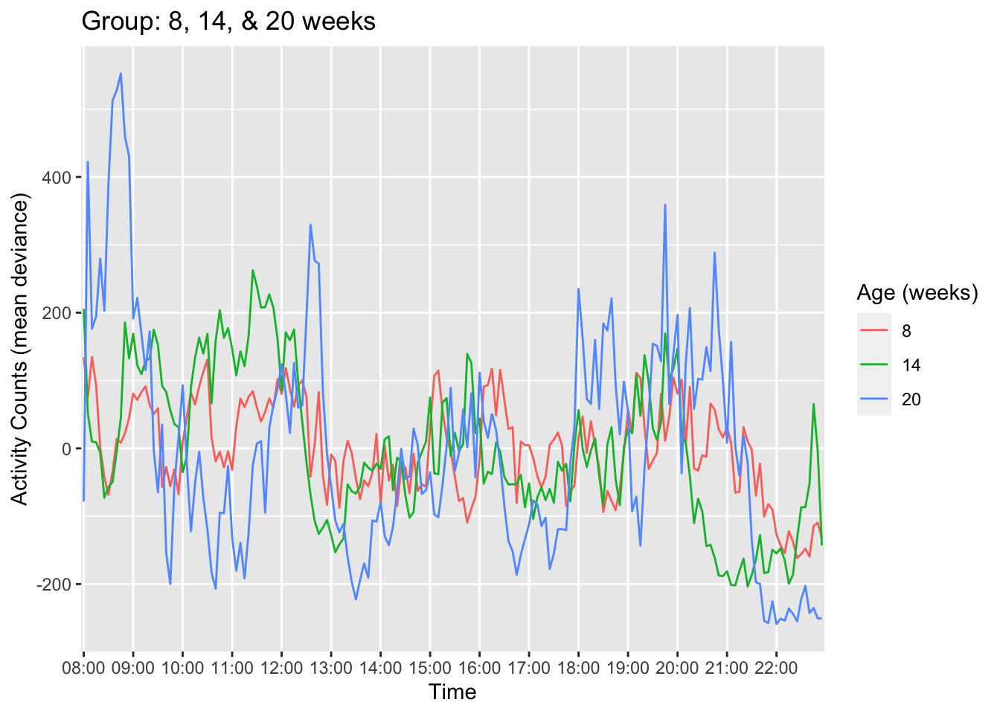

Mean Deviance Graphs
Morgan Ferrans
11/4/2021
#PLOTTING ACTIVITY Setup —
library(ggplot2)
library(dplyr)
load(file = "activitygraphsenv.RData")
weeklyintervaldf$weeksold<-as.factor(weeklyintervaldf$weeksold)
indiv_weekly_dev$weeksold<-as.factor(indiv_weekly_dev$weeksold)List of desired hourly time breaks for graph x axis tick marks
hours_list<-c("08:00","09:00","10:00","11:00","12:00","13:00","14:00","15:00","16:00","17:00","18:00","19:00","20:00","21:00","22:00")#MEAN DEVIANCE GRAPHS
INDIVIDUAL GRAPHS FOR 1 INDIVIDUAL PUPPY FOR 1 INDIVIDUAL WEEK
#Leo, 8 weeks
ggplot(subset(indiv_weekly_dev,weeksold=="8" & name=="Leo"), aes(x=intervaltime, y=meandeviance, group=1)) + ylim(-500,2500) + geom_line() + ggtitle("Leo: 8 weeks") + xlab("Time") + ylab("Activity Counts (mean deviance)") + labs(colour = "Age (weeks)") +
scale_x_discrete(breaks=hours_list) GRAPH OF MEAN DEVIANCE (GROUPED BY PUPPY) FOR 1 SPECIFIC WEEK
GRAPH OF MEAN DEVIANCE (GROUPED BY PUPPY) FOR 1 SPECIFIC WEEK
ggplot(subset(indiv_weekly_dev,weeksold=="8"), aes(x=intervaltime, y=meandeviance, group='name')) + geom_line(aes(colour=name)) + ggtitle("Mean Deviance: 8 weeks") + xlab("Time")+ ylab("Mean Deviance") + labs(colour = "Puppy") + scale_x_discrete(breaks=hours_list) COMPARE TWO PUPPIES’ MEAN DEVIANCE FOR 1 SPECIFIC WEEK
ggplot(subset(indiv_weekly_dev,name=="Rainbow"&weeksold==12|name=="Stanley"&weeksold==12), aes(x=intervaltime, y=meandeviance, group=name)) + geom_line(aes(colour=name)) + ggtitle("Mean Deviance: 12 weeks") + xlab("Time")+ ylab("Mean Deviance") + labs(colour = "Puppy") + scale_x_discrete(breaks=hours_list) GROUP AVG FOR 1 INDIVIDUAL WEEK
#8 weeks
ggplot(subset(weeklyintervaldf,weeksold=="8"), aes(x=intervaltime, y=interval_avg_deviance, group=1)) + geom_line() + ggtitle("Group: 8 weeks") + xlab("Time") + ylab("Activity Counts (mean deviance)") + labs(colour = "Age (weeks)") + scale_x_discrete(breaks=hours_list) GRAPHS OF ALL WEEKS OVERLAID (USING ENTIRE GROUP MEAN DEVIANCE)
ggplot(weeklyintervaldf, aes(x=intervaltime, y=interval_avg_deviance, group=weeksold)) + geom_line(aes(colour=weeksold)) + ggtitle("Group: 8-20 weeks") + xlab("Time")+ ylab("Activity Counts (mean deviance)") + labs(colour = "Age (weeks)") + scale_x_discrete(breaks=hours_list) GRAPHS OF ALL WEEKS FOR 1 INDIVIDUAL PUPPY
ggplot(subset(indiv_weekly_dev,name=="Rainbow"), aes(x=intervaltime, y=meandeviance, group=weeksold)) + geom_line(aes(colour=weeksold)) + ggtitle("Rainbow: 8-20 weeks") + xlab("Time") + ylab("Activity Counts (mean deviance)") + labs(colour = "Age (weeks)") + scale_x_discrete(breaks=hours_list)
GRAPHS OF GROUP DEVIANCE: 8 VS 20 WEEKS
ggplot((subset(weeklyintervaldf,weeksold=="8" | weeksold=="20")), aes(x=intervaltime, y=interval_avg_deviance, group=weeksold)) + geom_line(aes(colour=weeksold)) + ggtitle("Group: 8 vs. 20 weeks") + xlab("Time") + ylab("Activity Counts (mean deviance)") +ylab("Activity Counts (mean deviance)") + labs(colour = "Age (weeks)") + scale_x_discrete(breaks=hours_list) GRAPHS OF GROUP DEVIANCE: 8, 14, & 20 WEEKS
GRAPHS OF GROUP DEVIANCE: 8, 14, & 20 WEEKS
ggplot((subset(weeklyintervaldf,weeksold=="8" | weeksold=="14"| weeksold=="20")), aes(x=intervaltime, y=interval_avg_deviance, group=weeksold)) + geom_line(aes(colour=weeksold)) + ggtitle("Group: 8, 14, & 20 weeks") + xlab("Time") + ylab("Activity Counts (mean deviance)") +ylab("Activity Counts (mean deviance)") + labs(colour = "Age (weeks)") + scale_x_discrete(breaks=hours_list)